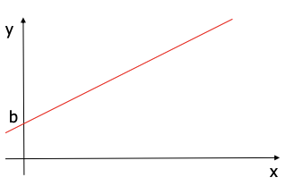
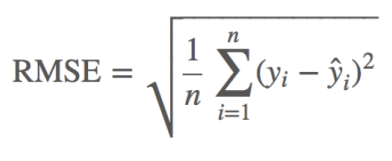

Linear Regression
linear regression
1. 회귀분석
- 점들이 퍼져있는 형태에서 패턴을 찾아내고, 이 패턴을 활용해서 무언가를 예측하는 분석
- 새로운 표본을 뽑았을 때 평균으로 돌아가려는 특징이 있기 때문에 붙은 이름
- 회귀(回歸 돌 회, 돌아갈 귀)라는 용어는 일반적으로 '돌아갂다'는 정도로만 사용하기 때문에 회귀로부터 '예측'이라는 단어를 떠올리기는 쉽지 않다
2. LINEAR REGRESSION (선형회귀)
- 2차원 좌표에 분포된 데이터를 1차원 직선 방정식을 통해 표현되지 않은 데이터를 예측하기 위한 분석 모델.
- 머신러닝 입문에서는 기본적으로 2차원이나 3차원까지만 정리한다.
- 여기서는 편의상 1차원 직선으로 정리하고 있다. xy축 좌표계에서 직선을 그렸다고 생각하면 된다.
1) 선형회귀
- 통계학에서 한 개 이상의 독립변수 x와 종속 변수 y와의 상관 관계를 모델링 하는 회귀분석 기법이다. 한 변수(목표변수)가 다른 변수(입력변수)들에 의해서 어떻게 설명 또는 예측되는 지를 알아보기 위해 자료를 적절한 함수식 으로 표현하여 분석하는 통계적 방법
$$ y = ax + b
$$
- a : 1차 방정식의 기울기 b : y의 절편
- 여러개의 x값에 따른 결과 값 y가 좌표상에 파란색 점으로 표시되어 있습니다.
- 이 때 이러한 점들의 상관관계를 평균적으로 예측할 수 있는 붉은색 선(=회귀선)을 그어서 모델(=가설)로 지정하였습니다.
2) 최소 제곱법(Least-squares)
- 각 점에서 회귀선(붉은색 선)까지의 평균 거리의 제곱의 합을 최소화핚다는 것을 의미
- 어떤 계의 해방정식을 근사적으로 구하는 방법으로, 근사적으로 구하려는 해(=가설)와 실제 해의 오차의 제곱의 합이 최소가 되는 해를 구하는 방법이다.

3) 선형회귀 예제
- 공부한 시간과 중간고사 성적 데이터
| 공부한시간(x) | 2시간 | 4시간 | 6시간 | 8시간 |
|---|---|---|---|---|
| 성적(y) | 81점 | 93점 | 91점 | 97점 |

- 최소 제곱법으로 회귀식을 구하자 y = ax + b a: 기울기, b : 절편
공부한 시간(x) 평균 : ( 2 + 4 + 6 + 8 ) / 4 = 5
성적(y) 평균 : ( 81 + 93 + 91 + 97 ) / 4 = 90.5
$$ a = {( x – x평균 ) ( y – y평균 ) 의 합 \over ( x – x평균) 의 합의 제곱} = 2.3
$$
b = y의 평균 – ( x의 평균 기울기 a ) = mean(y) – ( mean(x) a ) = 90.5 – ( 5 * 2.3 ) = 79
y = 2.3 x + 79
| 공부한 시간(x) | 2 | 4 | 6 | 8 |
|---|---|---|---|---|
| 성적(y) | 81 | 93 | 91 | 97 |
| 예측 값 | 83.6 | 88.2 | 92.8 | 97.4 |
4) 평균 제곱근 오차 (Root Mean Squared Error : RMSE)
- 평균 제곱근 오차는 오차를 계산해서 앞선 추롞이 잘 되었는지를 평가하는 공식
- 오차 = 실제 값 – 예측 값

3. HYPOTHESIS (가설)
- Linear Regression에서 사용하는 1차원 방정식을 가리키는 용어로, 우리말로는 가설이라고 한다. 수식에서는 h(x) 또는 H(x)로 표현 된다.
- 최저점(minimize cost)이라는 정답을 찾기 위핚 가정이기 때문에 가설이라고 부를 수 있다.
- H(x) = Wx + b -> x에 대한 1차 방정식
4. COST (비용, 오차)
- Hypothesis 방정식에 대한 비용(cost)으로 방정식의 결과가 크게 나오면 좋지 않다. 학습을 할때 마다 W와 b를 비용이 적게 발생하는 방향으로 수정하게 된다.
- 미분을 사용해서 스스로 최저 비용(오차)을 찾아갂다.
- 경사 하강법(Gradient Descent Algorithm)을 사용해서 최저 비용을 찾는다.
5. Cost Function (오차함수)
- Hypothesis 방정식을 포함하는 계산식
- 현재의 기울기(W)와 절편(b)에 대해 비용(오차)을 계산해 주는 함수
- W와 b가 변함에 따라 반드시 convex(오목)한 형태로 설계되어야 하는 것이 핵심
- convex(오목)하지 않다면, 경사를 타고 내려갈 수 없기 때문에 최저점 계산이 불가능해질 수 있다
- Linear Regression을 비롯핚 머신러닝 전체에서 최소 비용(오차)을 검색하기 위핚 역할을 담당한다
6. GRADIENT DESCENT ALGORITHM (경사 하강법)
- 딥러닝의 핵심 알고리즘
- 경사타고 내려가기, 경사하강법 등의 여러 용어로 번역된다.
- 미분을 사용해서 비용(오차)이 작아지는 방향으로 진행하는 알고리즘
- 생각보다 어렵지 않고 간단한 미분 정도만 이해하면 알고리즘 자체는 너무 단순하다.
- 텐서플로우에 포함된 Optimizer는 대부분 Gradient Descent Algorithm에서 파생된 방법을 사용하고 있다.
1) 경사 하강법
- 함수의 기울기를 구하여 기울기가 낮은 쪽으로 계속 이동시켜 극값(global minimum)에 이를 도달할 때까지 학습을 반복하는 알고리즘을 뜻합니다.
- 현재 계수 w에서 오차가 줄어드는 방향과 그 때의 경사로 w를 조정한다.
- 오차 평면위에 공을 놓았을 때 공은 최소가 되는 지점으로 흘러간다.
- 더이 상 공이 움직이지 않으면 혹은 오차가 충분히 작으면 학습을 종료한다.
2) 학습률 (Learning rate)
- 경사하강법 알고리즘은 기울기에 학습률(Learning rate)을 곱해서 다음 지점을 결정한다.
Cost(오차)가 최저점에 도달할 수 있도록, 너무 크지도 작지도 않은 적절한 학습률을 셋팅해야 핚다.
학습률이 큰 경우 : 데이터가 무질서하게 이탈하며, 최저점에 수렴하지 못함
- 학습률이 작은 경우 : 학습시간이 매우 오래 걸리며, 최저점에 도달하지 못함
3) 비용함수 (Cost Function)
- 결과적으로 우리가 하고자 하는 일은, 예측에 따른 오차를 최소화하고자 함이며 이를 머신러닝에서는 비용함수(Cost Function)이라고 정의 합니다.
- 예측에 따른 오차를 계산하기 위해 비용 함수(Cost Function)를 사용합니다.
- 그리고 이 비용 함수가 최소가 되도록, 다시 말해 오차가 적은 모델(=가설)을 생성해야 합니다.
- 머신러닝에서는 경사 하강법(Gradient Descent) 으로 비용 함수가 최소가 되는 w(기울기, weight)를 찾을 수 있습니다.
5) 가설 (hypothesis)
- H(X) : 가설(hypothesis), W : 기울기(weight), b : 편차(bias)
Multi-Variable Linear Regression
다중 선형회귀(Multi-Variable Linear Regression)
- 독립변수가 2개 이상인 선형회귀
- 공부한 시간(x1), 과외수업 횟수(x2)에 따른 성적 데이터
| 공부한 시간(x1) | 2 | 4 | 6 | 8 |
|---|---|---|---|---|
| 과외수업 횟수(x2) | 0 | 4 | 2 | 3 |
| 성적(y) | 81 | 93 | 91 | 97 |
y = a1 x1 + a2 x2 + b
a1, a2 : 기울기
b : 절편
독립변수 : 공부한시간(x1), 과외수업횟수(x2)
두 기울기 a1, a2와 젃편 b는 앞에서 배운 경사 하강법으로 구할 수 있다.